Forecasting Routine Vaccine Administration Under Uncertainty
A Comparative Evaluation
Udeshi Salgado, Cardiff University, UK
Lead supervisor: Prof. Bahman Rostami-Tabar
Co-supervisors: Dr Thanos E Goltsos, Dr Geraint Palmer, Dr Paul Wang
Data Lab for Social Good, Cardiff University, UK
30 June 2026
Outline
- Background and motivation
- Current practice: the FSP tool
- Data and Methodology
- Results
Outline
- Background and motivation
- Current practice: the FSP tool
- Data and Methodology
- Results
Background

- 1 in 5 children worldwide still lack access to essential vaccines.
- A key operational driver is inefficiency in vaccine supply chains.
- In low and middle-income countries this shows up as:
- inaccurate demand forecasts
- inventory decisions made with no measure of uncertainty
- wastage and stockouts
Vaccines
A vial holds several doses; each dose is what reaches a child. We forecast the doses actually administered.
Vial
 Dose
Dose
 Administered
Administered
The immunisation supply chain
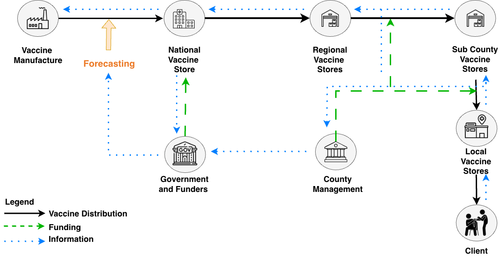
Demand across administrative levels
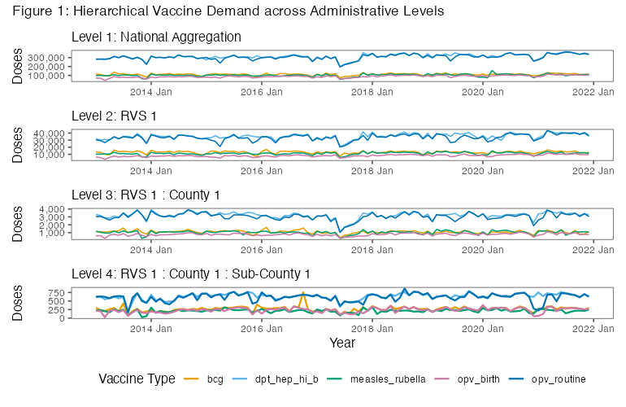
Outline
- Background and motivation
- Current practice: the FSP tool
- Data and Methodology
- Results
One question, three answers
How many doses to procure next year? FSP4All forecasts consumption (administered doses plus wastage) three ways, then blends them.
Demographic
- Counts the eligible child population
- Coverage target × dose schedule
- \(Q_{\mathrm{dem}} = P \cdot \frac{c}{100} \cdot d\)
Consumption
- Averages the last 12 months of issues into one flat mean
- Projects it forward by assumed growth, even when the data are years old
- \(Q_{\mathrm{cons}} = \bar{C} \cdot 12 \cdot (1+g)^{t} \cdot \frac{100-w_{\mathrm{old}}}{100-w_{\mathrm{new}}} \cdot (1+r)\)
Session
- Built bottom-up from the session plan
- Sessions × average attendance × doses
- \(Q_{\mathrm{sess}} = \sum_{s} n_{s} \cdot \bar{a}_{s} \cdot d\)
Then combine
- \(Q_{\mathrm{FSP}} = \sum_{m} \omega_{m}\, Q_{m}\)
- Weights are decided by the experts in the immunisation supply chain. Default weights are equal
Notation \(P\): target population
\(c\): coverage (%)
\(d\): doses per child
\(\bar{C}\): avg. monthly consumption
\(g\): population growth
\(t\): years from data to plan year
\(r\): planner’s manual % adjustment, e.g. for a campaign
\(w\): wastage (%)
\(n_s\): sessions
\(\bar{a}_s\): attendance
\(\omega_m\): method weights
The data is there, but the method isn’t
Two methods have no inputs; the third ignores the history sitting right beside it.
Session No data
- No session plans kept
- No attendance records
- The method cannot run
Consumption No data
- Only administered doses recorded
- No wastage or reporting rates
- Consumption cannot be computed
Demographic Data, but…
- A fixed estimate, not a forecast
- Needs a rarely-measured wastage rate
- Uncertainty stays hidden
The missed opportunity. FSP4All already holds both the demographic estimate and years of doses-administered history. Yet it only averages them, using simple or expert-assigned weights. No forecasting model is ever fitted to the historical data.
Vaccine demand forecasting in the literature
| Reference | Approach / method | Target variable | Level | Horizon | Evaluation focus | Probabilistic forecasting | Benchmark | Wastage component | Inventory integration | Distributional post-processing |
|---|---|---|---|---|---|---|---|---|---|---|
| Chiu et al. (2008) | ARIMA, BPNN | Annual demand | Regional | 1 year | Average error | No | No | No | No | No |
| Kotagiri et al. (2011) | Birth-cohort model | Inventory requirements | Local inventory | 1 year | Inventory impact | No | No | No | Yes | No |
| Mueller et al. (2016) | Simulation | Vaccine quantity | Multi-level | 12 months | Availability, cost | No | No | No | Yes | No |
| Azadi et al. (2018) | Regression | Childhood demand | Regional | n.s. | Not reported | No | No | No | No | No |
| Cernuschi et al. (2018) | Demand-supply assessment | BCG demand, supply | National, global | 14 years | Procurement | No | No | No | No | No |
| Alegado & Tumibay (2020) | ARIMA, MLP | Monthly demand | Local | 12 months | RMSE, MAE | No | No | No | No | No |
| Hariharan et al. (2020) | Random forest | Utilisation | Facility | Biweekly | RMSE | No | Yes | No | No | No |
| Sahisnu et al. (2020) | ARIMA | Stock levels | Local | 10 months | MAPE | No | No | No | Yes | No |
| Vinitha et al. (2024) | Regression, trees, LSTM, ANN | Infant demand | Local | n.s. | RMSE, R² | No | No | No | No | No |
| Current study | FSP, statistical, ML, DL, foundation, ensemble | Administered doses, monthly | Sub-county | 6 months | CRPS, MASE, RMSSE | Yes | Yes | No | No | Yes |
Outline
- Background and motivation
- Current practice: the FSP tool
- Data and Methodology
- Results
Data
5 vaccines BCG · Pentavalent · Measles-Rubella · OPV birth · OPV routine
306 sub-counties the most granular operational level
1,530 series one per vaccine and sub-county
Monthly, 2013 to 2021 doses administered, calendar-normalised
Demographic and coverage FSP target population · WHO coverage targets
External drivers floods · drought · epidemics · CPI · holidays
Weak trend and seasonality
Across the 1,530 series, most show low trend strength and weak, inconsistent seasonality. Sub-county series (circles) are the noisiest and least predictable, so historical patterns alone explain only part of demand.
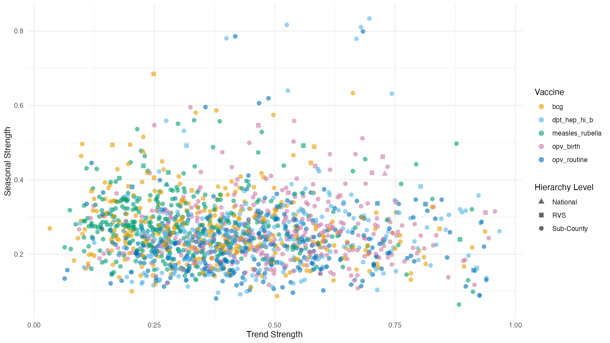
Trend, seasonality and noise
Decomposing the administered series: a smooth local trend and a modest seasonal cycle sit beneath a large, irregular remainder. At the operational level the noise component dominates.

Forecast the history, bound with the plan
We hold administered doses, not consumption. So we forecast administered demand with uncertainty and bound it with the administered demographic, without guessing wastage.
1 · Forecast with uncertainty
- Administered demand, modelled directly
- Statistical · ML · DL · foundational methods
- \(\rightarrow \mathcal{N}(\mu, \sigma)\), a full predictive distribution
2 · Bound, no wastage assumed
- The administered FSP demographic sets the ceiling
- \(U = k\cdot E\), calibrated from history
- \(\rightarrow \mathrm{TN}(\mu, \sigma, 0, U)\), truncated to feasible demand
Data-driven uncertainty and domain feasibility: the combination FSP4All never makes.
Research Question Can data-driven probabilistic forecasting, combined with FSP-informed distributional truncation, improve routine childhood vaccine administrative demand forecasting at the sub-county operational level, relative to the FSP approach used in practice?
Methodology
Data sources
Administered doses African country, sub-county · 2013 to 2021 · monthly · BCG, DPT-HepB-Hib, Measles-Rubella, OPV birth, OPV routine
Demographic and external FSP target population (sub-county level), WHO coverage · floods, drought, epidemics · Consumer Price Index (CPI) · working days, holidays, lags
▼
Forecasting setup
FSP benchmark demographic
Statistical ARIMA · ETS · Naive · sNaive
Machine learning Lasso · Elastic Net · RF · XGBoost · LightGBM
Deep learning and foundation ANN · LSTM · Chronos
Rolling-origin cross-validation · 6-month horizon (h = 1 to 6) · raw output \(\mathcal{N}(\mu, \sigma)\)
▼
Distributional post-processing
1 · Calibration 2018 to 2019 hold-out · per vaccine and sub-county · \(k = Q_{0.975}(y / E)\)
2 · Define bounds \(L = 0\) (non-negativity) · \(U = k\,E\) (FSP-informed ceiling)
3 · Truncated distribution recast \(\mathcal{N}(\mu,\sigma)\) as \(\mathrm{TN}(\mu, \sigma, 0, U)\) · scored with exact TN CRPS
▼
Feasibility-aware probabilistic forecast: bounded support, calibrated tails, decision-relevant CRPS
Distributional post-processing: defining bounds
We bound each forecast with the administered FSP demographic: the eligible cohort × dose schedule at full (100%) coverage. The lower bound is structural; the upper bound is calibrated from history.
Lower bound
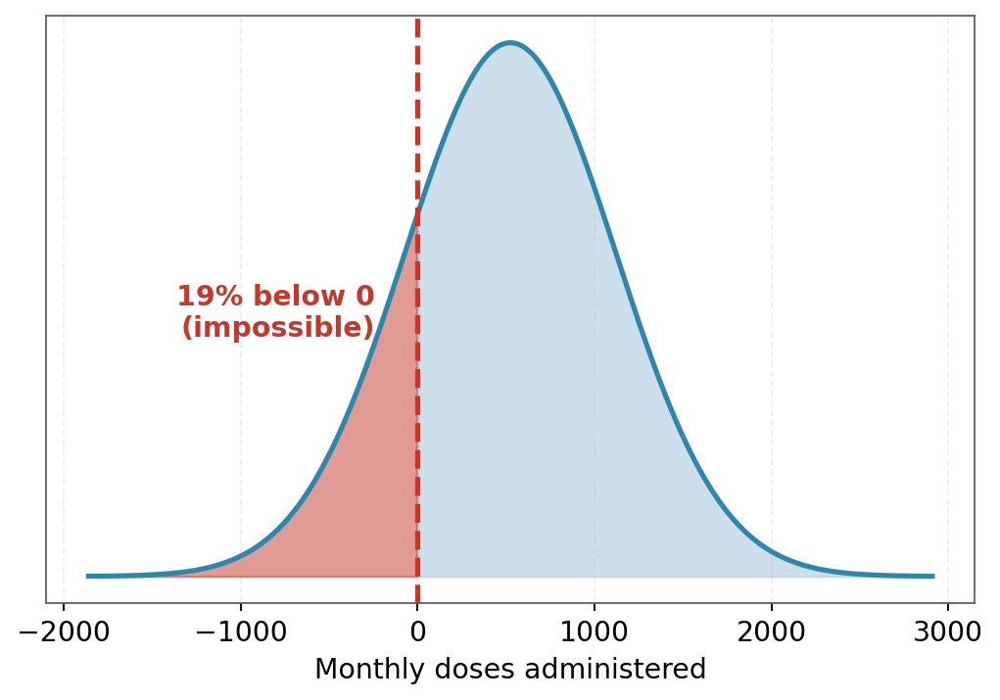
\[L = 0\]
A structural constraint. Monthly doses administered cannot be negative.
Upper bound
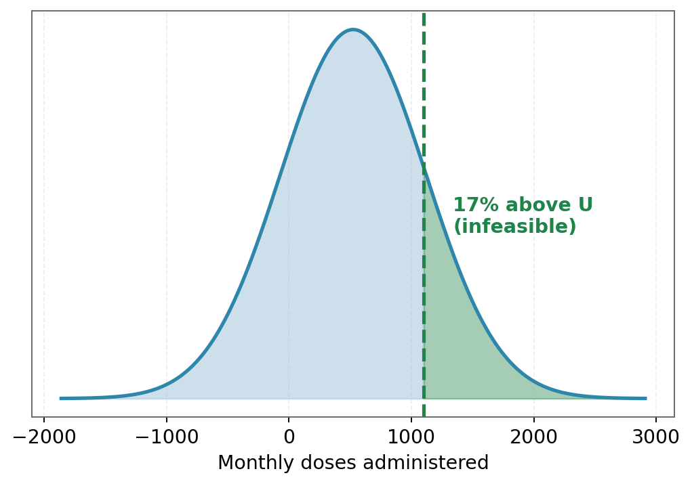
\[U_{i,v,t} = k_{i,v}\,E^{\uparrow}_{i,v,t}\]
Calibrate \(k_{i,v} = Q_{0.975}\!\left(\tfrac{y}{E}\,\big|\,2018\text{–}19\right)\) on the administered FSP point forecast, where the central capacity is \(E = \text{Target Population} \times \,\text{No of doses} \times \,\text{100% coverage} /12\).
Apply to the upper capacity \(E^{\uparrow} = \text{Target Population Upper} \times \,\text{No of doses} \times \,\text{100% coverage}/12\) (the upper cohort at 100% coverage) to set the feasibility ceiling.
From bounds to truncated distribution
Once \([L, U]\) is set, the raw Gaussian forecast is re-cast as a truncated Normal on that interval.
\[Y_{i,v,t+h} \sim \mathcal{N}(\mu, \sigma) \;\Longrightarrow\; Y_{i,v,t+h} \sim \mathrm{TN}(\mu, \sigma, L, U)\]
Standardised bounds and normaliser (\(\Phi\), \(\phi\): standard Normal CDF and PDF):
\[\alpha = \frac{L-\mu}{\sigma},\qquad \beta = \frac{U-\mu}{\sigma},\qquad Z = \Phi(\beta) - \Phi(\alpha)\]
Truncated mean and variance:
\[\mu^{\mathrm{tr}} = \mu + \sigma\,\frac{\phi(\alpha) - \phi(\beta)}{Z}, \qquad (\sigma^{\mathrm{tr}})^2 = \sigma^2\!\left[1 + \frac{\alpha\,\phi(\alpha) - \beta\,\phi(\beta)}{Z} - \left(\frac{\phi(\alpha)-\phi(\beta)}{Z}\right)^{2}\right]\]
The truncated distribution is scored with the exact closed-form truncated Normal CRPS.
Truncation in practice
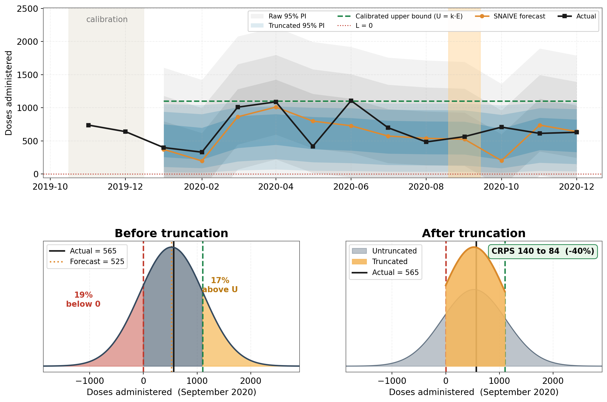
The untruncated raw Gaussian wastes mass below 0 and above \(U\). Truncation concentrates it into the feasible range, improving the CRPS.
Evaluation metrics
Errors are scaled by the FSP benchmark, so a value below 1 beats current practice.
Point accuracy
\[\mathrm{MSE} = \tfrac{1}{n}\sum_t (y_t-\hat{y}_t)^2 \qquad \mathrm{MAE} = \tfrac{1}{n}\sum_t |y_t-\hat{y}_t|\]
\[\mathrm{RMSSE} = \sqrt{\tfrac{\mathrm{MSE}}{\mathrm{MSE}_{\mathrm{FSP}}}} \qquad \mathrm{MASE} = \tfrac{\mathrm{MAE}}{\mathrm{MAE}_{\mathrm{FSP}}}\]
Pooled across series: \(\;\mathrm{RMSSE}_{\text{pooled}} = \sqrt{\tfrac{1}{N}\textstyle\sum_i \mathrm{RMSSE}_i^{2}}\)
Distributional accuracy
\[\mathrm{CRPS}(F,y) = \int_{-\infty}^{\infty}\big(F(x)-\mathbf{1}\{x\ge y\}\big)^2\,dx\]
\[\text{scaled CRPS} = \tfrac{\mathrm{CRPS}}{\mathrm{CRPS}_{\mathrm{FSP}}}\]
Truncated forecasts are scored with the closed-form CRPS of \(\mathrm{TN}(\mu,\sigma,0,U)\), not the raw Gaussian.
How to read the scale Below 1 beats the FSP tool, 1 ties, above 1 is worse. Ranking via the Nemenyi test, \(\mathrm{CD} = q_\alpha\sqrt{k(k+1)/6N}\); methods whose bars overlap are not significantly different.
Outline
- Background and motivation
- Current practice: the FSP tool
- Data and Methodology
- Results
Before truncation: point accuracy
Nemenyi average ranks for RMSSE, with mean MASE and RMSSE alongside. Lower rank is better; bars within one critical difference are not significantly different.
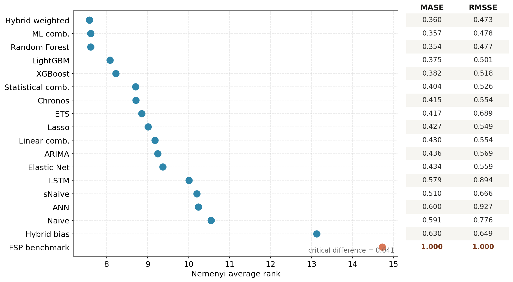
Before truncation: distributional accuracy
Nemenyi average ranks for scaled CRPS, with the mean scaled CRPS alongside. The FSP benchmark ranks last on both point and distributional accuracy.
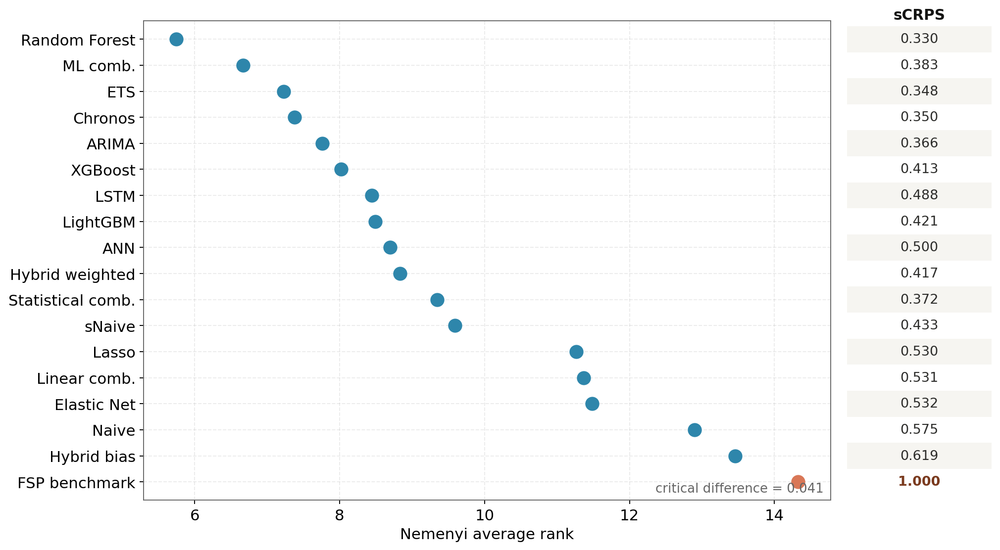
Accuracy vs computational cost
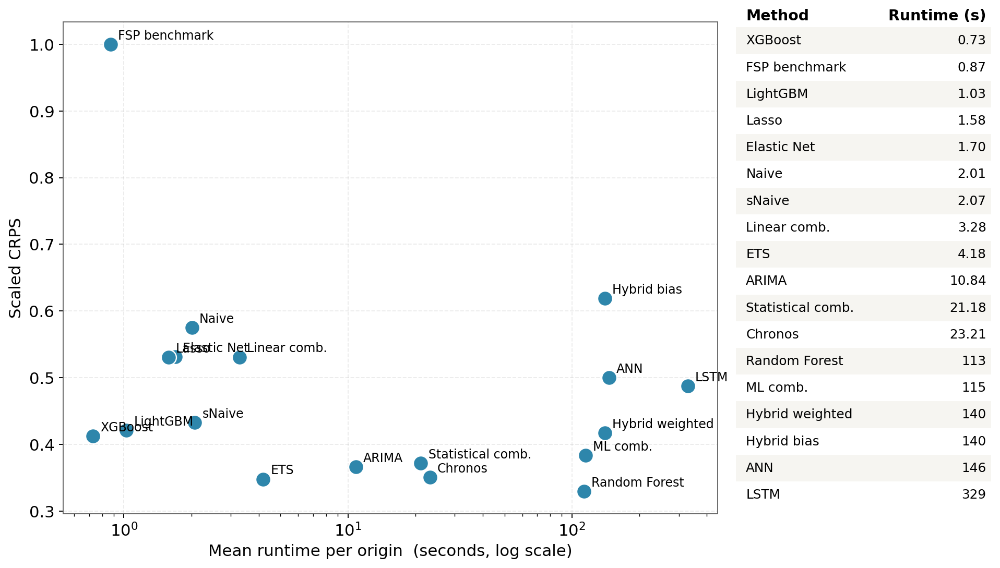
After truncation: RMSSE
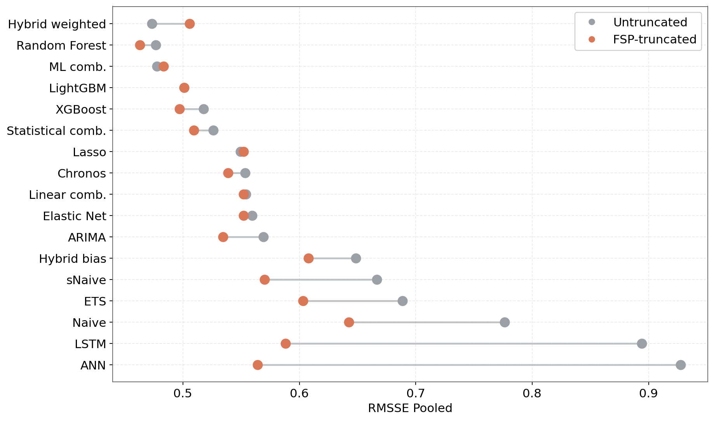
Point accuracy. Truncation moves every method to the left (better); the largest gains are for the most diffuse forecasters, such as sNaive and ETS.
After truncation: scaled CRPS
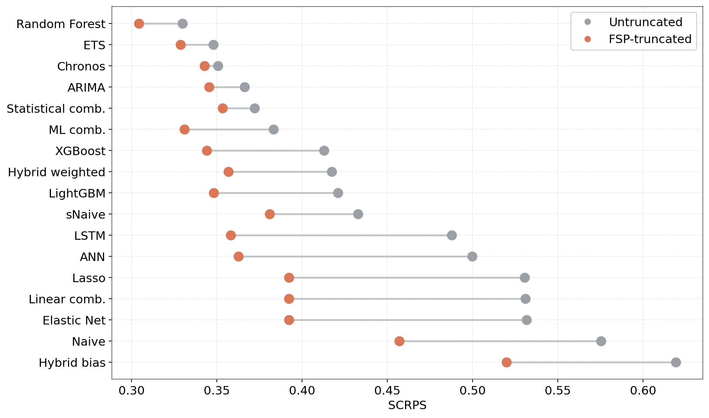
Distributional accuracy. Every method improves; gains are largest for LSTM, sNaive and ETS.
Distribution of errors across horizons
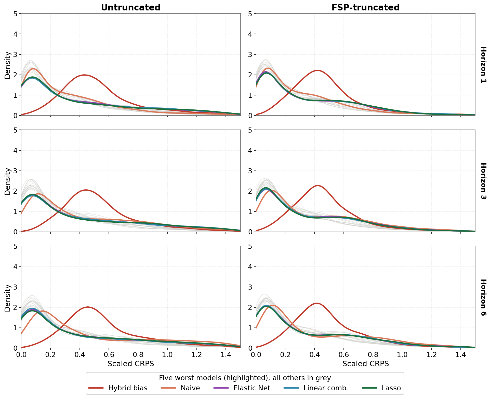
Densities of scaled CRPS, untruncated (left) vs FSP-truncated (right), by horizon. The five worst forecasters are highlighted, the rest in grey. Truncation pulls their error mass towards zero, most visibly at longer horizons.
Where truncation helps most
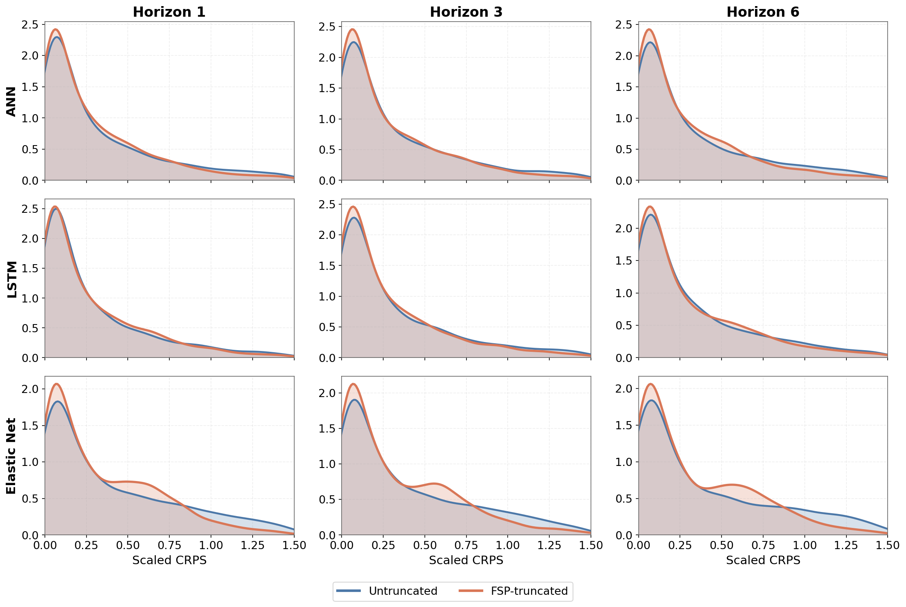
The three models that gain most from truncation (LSTM, Naive, sNaive). Untruncated (blue) and FSP-truncated (orange) densities overlaid, by horizon. Truncation concentrates the distribution and trims the right tail, clearest for Naive at longer horizons.
Truncation tightens the dispersed forecasters at longer horizons
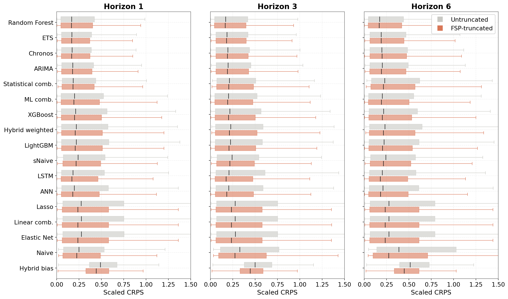
Every model as a horizontal boxplot of scaled CRPS, untruncated (grey) vs FSP-truncated (orange), by horizon. Truncation pulls in the upper tail of the diffuse forecasters (Naive, sNaive, Hybrid weighted, LSTM), and the effect grows with the horizon.
The road ahead
Where this work goes next.
Add the wastage component
- Extend administered forecasts to total consumption
- Supports end-to-end procurement quantification
Link to inventory simulation
- Translate forecast distributions into stockouts, wastage, and service levels
Hierarchical reconciliation
- Keep forecasts coherent across national → sub-county levels
Any questions or thoughts? 💬


Visit my website for slides